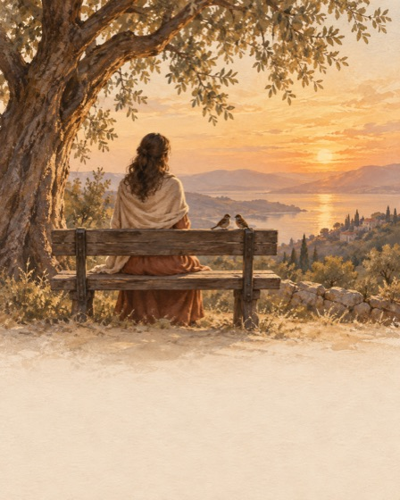
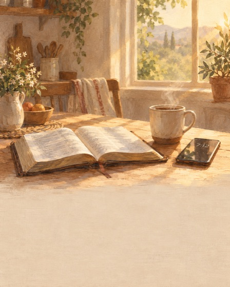
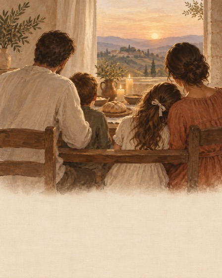
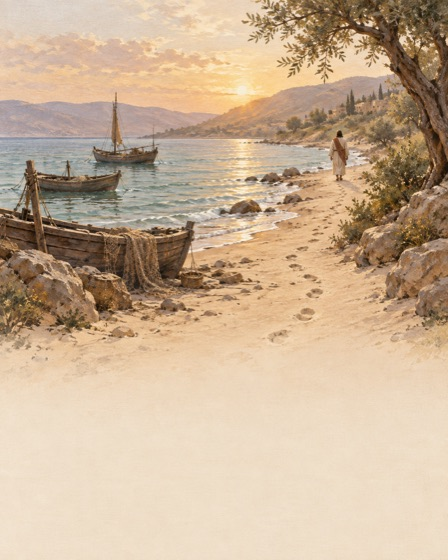

Первые сессии
Человек пришёл с болью, которую назвал в онбординге. Сразу даём ему его путь на 7 дней под эту боль, а после — путь роста. Он всегда знает, что будет завтра, и видит образ результата: обложка пути показывает состояние, к которому он идёт.
Сессии 1–3
Сессия 1 · день установки
- Онбординг → пейвол «Your rhythm is ready»
- Студия виджета в 3 тапа: где → стиль с живым превью своего стиха → инструкция → «It's there ✓» → «и на главный экран?»
- Короткое приветствие: свой стих на весь экран, ▶ голос Charon
- День 1 из 7: стих, молитва вслух, маленькая практика, 7 точек пути
- Карточка «Завтра»: какой стих будет утром на экране блокировки
Сессия 2 · тот же вечер
- Уведомление в выбранное время
- Стих на ночь + молитва вслух + таймер сна
- Экран блокировки в тонах свечи
- Снова «Завтра»
Сессия 3 · следующее утро
- Виджет уже показывает стих Дня 2
- Тап по виджету → День 2
- ♥ сохраняет стих в «Мои стихи»
- «Read in context» — стих в главе
- День 7 → путь пройден → выбор пути роста
Пути помощи — первый путь

помощь
помощьПути роста — что выбирают следующим

рост
ростДень пути: стих (весь день на экране блокировки) + молитва на минуту голосом Charon + одна маленькая практика. Молитвы — Book of Common Prayer (общественное достояние) или «помолись этим стихом». Обложки — Codex.
Консилиум Jev: 15 механик
| Механика | итог | вау | возврат | след. шаг | платят | груз |
|---|---|---|---|---|---|---|
| 7-day path for your state | 0.65 | 0.75 | 0.76 | 0.87 | 0.65 | 0.23 |
| Evening ritual with audio | 0.62 | 0.73 | 0.76 | 0.76 | 0.67 | 0.22 |
| Widget studio in setup | 0.61 | 0.74 | 0.69 | 0.90 | 0.61 | 0.25 |
| Save verses to 'My verses' | 0.59 | 0.66 | 0.71 | 0.82 | 0.64 | 0.23 |
| 'Tomorrow' card | 0.58 | 0.68 | 0.70 | 0.86 | 0.64 | 0.27 |
| Prayer list with gentle follow-up | 0.52 | 0.61 | 0.67 | 0.72 | 0.65 | 0.28 |
| Learn it by heart on the Lock Screen | 0.52 | 0.58 | 0.71 | 0.86 | 0.64 | 0.35 |
| One-tap 'How are you now?' check-in | 0.48 | 0.62 | 0.70 | 0.68 | 0.62 | 0.35 |
| First-session welcome moment | 0.48 | 0.73 | 0.69 | 0.44 | 0.58 | 0.26 |
| Send a verse to someone | 0.48 | 0.58 | 0.63 | 0.74 | 0.58 | 0.31 |
| 'About this verse' (context, public-domain notes) | 0.44 | 0.61 | 0.69 | 0.32 | 0.64 | 0.25 |
| Make a verse wallpaper | 0.44 | 0.65 | 0.58 | 0.84 | 0.50 | 0.41 |
| 21-day path | 0.42 | 0.47 | 0.70 | 0.79 | 0.59 | 0.42 |
| 'Your week with God' recap | 0.32 | 0.36 | 0.50 | 0.28 | 0.64 | 0.25 |
| Classic streak | 0.18 | 0.29 | 0.58 | 0.64 | 0.47 | 0.64 |
Раунд 2
| Вопрос | Победитель | Проигравшие |
|---|---|---|
| Установка виджета | Студия: где → стиль → инструкция → автопроверка 0.56 | только инструкция 0.49 · всё сразу 0.43 (груз 0.51) |
| Первая сессия | Приветствие → День 1 → «Завтра» (вау 0.82) | сразу экран Today (вау 0.78) |
| День пути | Стих + молитва + практика 0.586 | стих + молитва 0.583 · + вопрос 0.569 |
Консилиум всего пути
Jev (21 персона), панель персон на реальных скриншотах, Codex, Grok с 43 постами из X. Онбординг держится; слабые места — ценность до пейвола и «что дальше» после него.
| Этап | нравится | визуал | след. шаг | за что плачу | продолжит |
|---|---|---|---|---|---|
| 1 Hook | 0.71 | 0.76 | 0.80 | 0.32 | 0.71 |
| 2 What are you carrying | 0.58 | 0.65 | 0.48 | 0.34 | 0.58 |
| 3 Your verse | 0.68 | 0.74 | 0.77 | 0.29 | 0.65 |
| 4 Your rhythm | 0.65 | 0.61 | 0.78 | 0.35 | 0.64 |
| 5 Lock Screen preview | 0.66 | 0.70 | 0.72 | 0.36 | 0.64 |
| 6 Paywall | 0.40 | 0.54 | 0.83 | 0.71 | 0.58 |
| 7a Widget setup — guide | 0.62 | 0.59 | 0.81 | 0.26 | 0.66 |
| 7b Widget setup — studio | 0.71 | 0.71 | 0.80 | 0.30 | 0.69 |
| 8a First session — Today screen | 0.66 | 0.66 | 0.68 | 0.29 | 0.66 |
| 8b First session — welcome + Day 1 of a path | 0.71 | 0.75 | 0.85 | 0.35 | 0.68 |
| 9 First evening | 0.74 | 0.78 | 0.66 | 0.36 | 0.69 |
| 10 Day 3 morning | 0.69 | 0.67 | 0.65 | 0.40 | 0.68 |
| 11 Day 5 reminder | 0.51 | 0.54 | 0.77 | 0.36 | 0.53 |
31 идея через Jev
| Идея | итог | вау | возврат | платят | доверие ↓ | источник |
|---|---|---|---|---|---|---|
| Study progress: 'My journey' | 0.483 | 0.75 | 0.76 | 0.69 | 0.26 | основатель |
| No-AI mode and voice transparency | 0.465 | 0.69 | 0.73 | 0.65 | 0.12 | панель |
| Widget studio | 0.427 | 0.73 | 0.70 | 0.62 | 0.25 | план |
| My verses tab | 0.422 | 0.68 | 0.73 | 0.68 | 0.20 | основатель |
| Book journeys (read a book in small pieces) | 0.422 | 0.68 | 0.74 | 0.65 | 0.27 | панель |
| Large-text simple mode | 0.420 | 0.70 | 0.71 | 0.63 | 0.21 | панель |
| Panic / 2 a.m. button | 0.415 | 0.74 | 0.74 | 0.66 | 0.30 | панель |
| Widget confirmation celebration | 0.408 | 0.73 | 0.69 | 0.58 | 0.24 | Codex |
| Prayer list (praying for others) | 0.407 | 0.69 | 0.76 | 0.68 | 0.31 | панель |
| Return, don't reset | 0.403 | 0.58 | 0.73 | 0.64 | 0.22 | Grok / X |
| First session: welcome → Day 1 → Tomorrow | 0.399 | 0.68 | 0.72 | 0.62 | 0.33 | план |
| 7-day paths | 0.386 | 0.75 | 0.75 | 0.61 | 0.37 | план |
| Clear paid features on the paywall | 0.366 | 0.73 | 0.70 | 0.61 | 0.32 | Codex |
| About this passage | 0.350 | 0.57 | 0.72 | 0.64 | 0.28 | основатель |
| Scripture memory mode | 0.343 | 0.65 | 0.73 | 0.63 | 0.25 | панель |
| Heart chat | 0.339 | 0.68 | 0.72 | 0.64 | 0.36 | основатель |
| Share 'what widget is that' | 0.313 | 0.62 | 0.72 | 0.62 | 0.28 | Grok / X |
| Trial safety card | 0.304 | 0.60 | 0.71 | 0.51 | 0.31 | панель |
| Widget history | 0.294 | 0.59 | 0.72 | 0.62 | 0.31 | панель |
| Verse before the distracting app | 0.284 | 0.66 | 0.73 | 0.64 | 0.38 | Grok / X |
| Tonight → Tomorrow handoff | 0.282 | 0.76 | 0.73 | 0.64 | 0.50 | панель |
| Share a verse card | 0.268 | 0.62 | 0.71 | 0.61 | 0.34 | панель |
| Groups: small group, club, prayer circle | 0.258 | 0.57 | 0.72 | 0.62 | 0.34 | панель |
| Situation shortcut on Today | 0.247 | 0.67 | 0.71 | 0.61 | 0.44 | Codex |
| Español | 0.242 | 0.44 | 0.69 | 0.57 | 0.29 | панель |
| Neutral and masculine options | 0.221 | 0.53 | 0.68 | 0.57 | 0.38 | панель |
| Softer paywall and plans | 0.220 | 0.66 | 0.70 | 0.60 | 0.44 | панель |
| Say plainly what this Bible is | 0.204 | 0.57 | 0.67 | 0.55 | 0.39 | Grok / X |
| Continuous listening | 0.201 | 0.60 | 0.69 | 0.60 | 0.41 | панель |
| Translation choice (KJV, Douay-Rheims, Reina-Valera) | 0.166 | 0.46 | 0.67 | 0.58 | 0.41 | панель |
| Catholic mode | -0.100 | 0.32 | 0.63 | 0.50 | 0.70 | панель |
Дорожная карта
1.0 · на ревью
- Онбординг v2 + точки прогресса, «Tap one…», честный «Turn it on»
- Мои стихи + «Мой путь» (не обнуляется)
- «Только Писание — без ИИ», «Как работает»
- Озвучка: мгновенно или по нажатию оплатившего, с дыхательной паузой
1.1 · следующая неделя
- 7-дневные пути + День 1 → «Завтра»
- Студия виджета
- Кнопка «2 часа ночи» на экране блокировки
- Список молитв за близких
- Крупный текст
Позже · не делаем
- Позже: книги по 5 минут, «Об этом отрывке» (только человек), заучивание, открытка «что за виджет», стих перед соцсетью, испанский
- Не делаем: открытый ИИ-чат, стрики, католический режим сейчас, выбор перевода
Источник: research/first-sessions-jev-2026-09-24 · research/journey-consilium-2026-09-24 · FIRST_SESSIONS.md